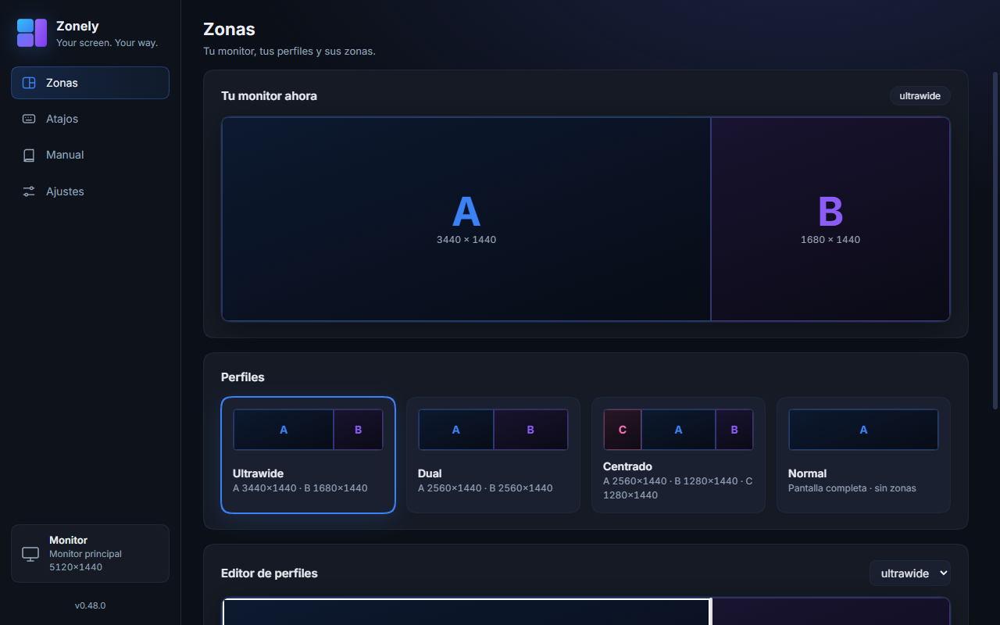
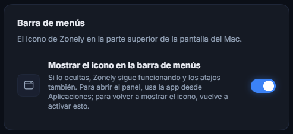
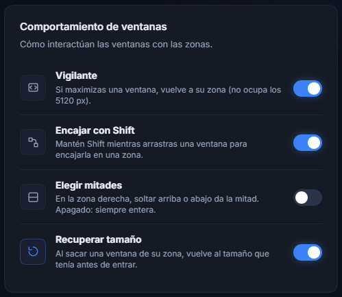
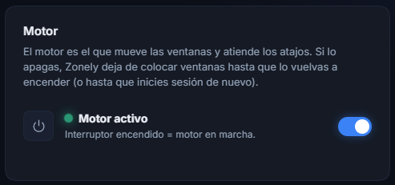
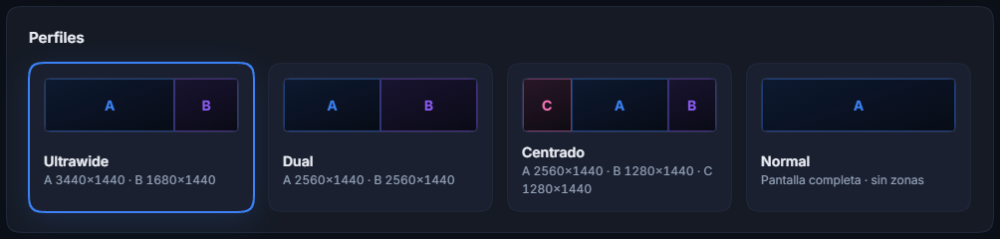
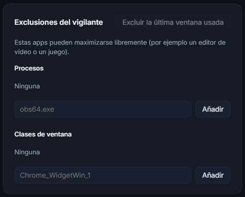
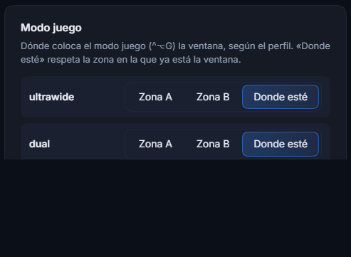
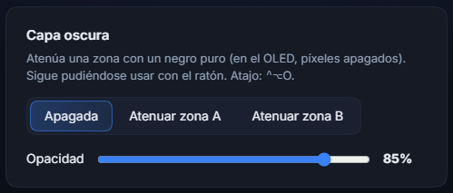
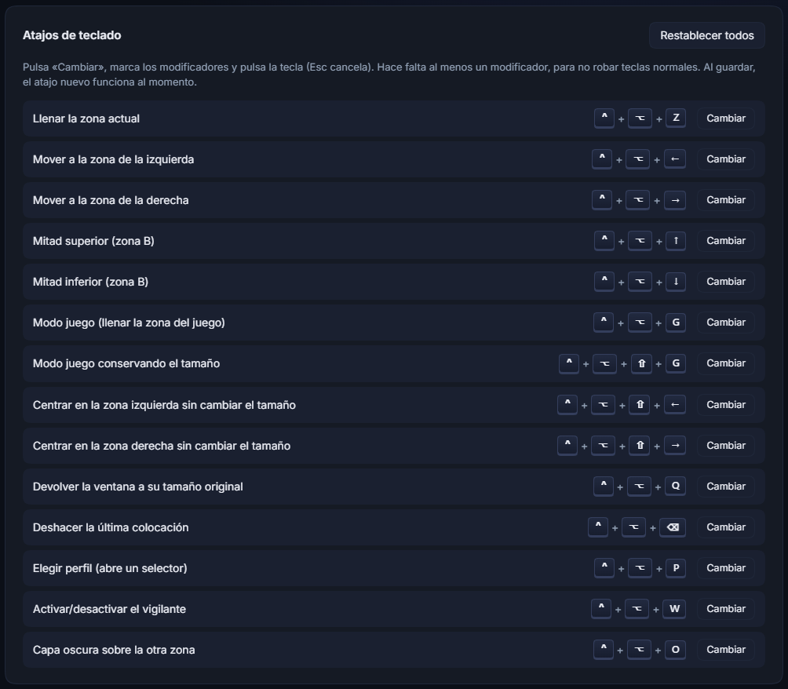

Dos pantallas en un solo monitor
Zonely divide tu pantalla en zonas independientes y coloca tus ventanas en ellas: el juego en una parte, y Discord, el navegador o el reproductor en la otra, como si fueran dos monitores. Este manual es el de la versión de macOS (Apple Silicon).
01Qué es y cómo funciona
La aplicación tiene dos piezas que trabajan juntas:
- El motor vive en segundo plano, con su icono en la barra de menús (arriba, junto al reloj). Mueve las ventanas, responde a los atajos y vigila los maximizados. Es lo único que tiene que estar siempre abierto.
- El panel es la ventana con la interfaz visual (la app «Zonely» de Aplicaciones). Sirve para ver el estado y cambiar ajustes. Puedes cerrarlo mientras trabajas: el motor sigue funcionando.
Zonely mueve las ventanas de otras aplicaciones con la API de Accesibilidad de macOS, así que necesita tu permiso la primera vez (capítulo 2). Panel y motor se hablan con dos ficheros pequeños en tu carpeta de datos: no usan red.
02Instalar y primeros pasos
Instalar
- Lo más fácil, sin avisos de seguridad: pega esto en la Terminal. Descarga la última versión con
curl, comprueba su SHA-256 y copia Zonely a Aplicaciones. Lo descargado concurlno queda marcado como «en cuarentena», así que macOS abre la app directamente.curl -fsSL https://raw.githubusercontent.com/denisalexandrescu8-dotcom/zonely/main/scripts/install-mac.sh | bash
También sirve para actualizar a una versión nueva. - O descarga
Zonely-<versión>-mac-arm64.dmgde la página de Releases, ábrelo y arrastra Zonely a Aplicaciones. La app no está notarizada (hace falta una cuenta de pago de Apple Developer), así que macOS la bloquea la primera vez: abre Ajustes del Sistema → Privacidad y seguridad, baja hasta el aviso sobre Zonely y pulsa Abrir igualmente. Si dice que la app «está dañada», mira el capítulo Si algo falla. - Al abrirse, Zonely pide el permiso de Accesibilidad: pulsa Abrir Ajustes del Sistema y activa ZonelyEngine en Privacidad y seguridad → Accesibilidad. Sin ese permiso, Zonely no puede mover ventanas. Si no sale el aviso, el menú del icono de la barra tiene «Permiso de Accesibilidad…».
Arrancar
- El motor se activa solo para arrancar al iniciar sesión la primera vez que se abre (puedes quitarlo en el menú del icono, «Abrir al iniciar sesión»).
- El panel se abre desde Aplicaciones o con «Abrir Zonely» en el menú del icono de la barra; al abrirse, arranca el motor si no estaba en marcha.
Tu primera prueba, en 1 minuto
- Abre TextEdit (o cualquier app) y haz clic en su ventana para que sea la activa.
- Pulsa ⌃+⌥+Z: la ventana se estira hasta ocupar exactamente la zona A.
- Pulsa ⌃+⌥+→: salta a la zona B.
- Pulsa ⌃+⌥+↑: ocupa solo la mitad de arriba de la zona B.
03El panel y la barra de menús
El panel tiene una barra lateral con tres secciones y el acceso a este manual:

| Sección | Qué hay | Capítulo |
|---|---|---|
| Zonas | Dibujo en vivo de tu pantalla, perfiles y editor de zonas. | 4 |
| Atajos | Ver y cambiar las combinaciones de teclado. | 11 |
| Ajustes | Comportamiento de las ventanas, barra de menús, actualizaciones, modo juego, capa oscura y exclusiones. | 6, 7, 8 |
El icono de la barra de menús
| Entrada del menú | Qué hace |
|---|---|
| Abrir Zonely | Abre el panel (o lo trae al frente si ya está abierto). |
| Perfiles | Se despliega con los perfiles de zones.ini; el activo va marcado y un clic lo aplica (con el aviso de «Perfil aplicado»). |
| Pausar atajos | Suspende todos los atajos hasta que lo vuelvas a pulsar. Útil si un juego usa las mismas teclas. |
| Abrir al iniciar sesión | Marcado = el motor arranca solo al encender el Mac. |
| Permiso de Accesibilidad… | Pide o abre el permiso que necesita Zonely para mover ventanas. |
| Abrir carpeta de datos | Abre ~/Library/Application Support/Zonely en el Finder. |
| Salir | Cierra el motor. Los atajos dejan de funcionar hasta que lo abras otra vez. |
¿No quieres ver el icono? En Ajustes → Barra de menús puedes ocultarlo: Zonely sigue funcionando y los atajos también. Para abrir el panel, usa la app desde Aplicaciones, y para volver a mostrar el icono vuelve a activar el interruptor.



04Zonas y perfiles
Una zona es un rectángulo fijo de la pantalla. Hay hasta tres: A, B y C, y su reparto lo define el perfil activo. La primera vez, Zonely calcula los perfiles para el tamaño de tu pantalla principal:
- ultrawide: una pantalla 21:9 a la izquierda y una columna a la derecha (solo si tu pantalla es lo bastante ancha).
- dual: dos mitades iguales.
- centrado: una pantalla 16:9 en el centro y una zona a cada lado (también solo en pantallas anchas).
- normal: la pantalla de siempre, sin zonas: los atajos de colocación, el encaje, el vigilante y la capa oscura no hacen nada.
En Mac, las zonas se ajustan al área útil de la pantalla (sin la barra de menús ni el Dock) y se escalan si cambias de pantalla o de resolución, así que no tienes que rehacerlas.

Cambiar de perfil
- ⌃+⌥+P abre un selector con una fila por perfil: su dibujo, el reparto y un botón Aplicar. Un clic en cualquier parte de la fila lo aplica; Esc o la ✕ lo cierran. Al elegir uno aparece un aviso breve de «Perfil aplicado».
- En el panel, haz clic en una tarjeta de Perfiles.
- En el menú del icono de la barra de menús, Perfiles y el que quieras.
Zonely recuerda el último perfil que usaste y lo vuelve a aplicar al reiniciar el Mac o el motor.
Cambiar de perfil no mueve las ventanas que ya están colocadas: afecta a las siguientes acciones. Para recolocar una ventana, usa ⌃+⌥+Z.
Ajustar las medidas con el editor de zonas
Arrastra la línea blanca o escribe el ancho de la zona A; la zona B ocupa el resto. Cada zona tiene un mínimo de 400 puntos.

zones.ini y Zonely lo aplica solo.05Mover y encajar ventanas
Hay tres formas de colocar una ventana. Usa la que te resulte más cómoda:
A) Con atajos de teclado
| Atajo | Qué hace |
|---|---|
| ⌃+⌥+Z | Llena la zona en la que está la ventana. |
| ⌃+⌥+← | La manda a la zona de la izquierda, ocupándola entera. |
| ⌃+⌥+→ | La manda a la zona de la derecha, ocupándola entera. |
| ⌃+⌥+↑ | En la zona B: mitad de arriba. |
| ⌃+⌥+↓ | En la zona B: mitad de abajo. |
| ⌃+⌥+⇧+← · ⌃+⌥+⇧+→ | Centra la ventana en la zona de la izquierda / derecha sin cambiar su tamaño. |
| ⌃+⌥+⇧+G | Modo juego conservando el tamaño (centrado en la zona del juego). |
| ⌃+⌥+⌫ | Deshacer la última colocación (hasta 20 pasos). |
| ⌃+⌥+Q | Devuelve la ventana a su tamaño original (el de antes de entrar en una zona). |
Con el perfil de tres zonas, ⌃+⌥+← y ⌃+⌥+→ pasan la ventana a la zona vecina. Si la ventana estaba en pantalla completa nativa, Zonely sale primero de ella y la coloca después (tarda una animación).
B) Arrastrando con una tecla (como FancyZones)
- Empieza a arrastrar una ventana por su barra de título.
- Sin soltar el botón, mantén pulsada ⇧ (Mayúsculas). Aparecen las zonas sobre la pantalla y la elegida se ilumina en blanco. Por defecto solo puedes elegir la zona de la izquierda o la de la derecha, enteras.
- Suelta el botón del ratón: la ventana encaja en esa zona.
La tecla (⇧, ⌃ o ⌥) se cambia en [Snap] Key de zones.ini (Shift, Ctrl o Alt). Con el interruptor Elegir mitades (Ajustes), soltar en la parte alta o baja de la zona B da la mitad de arriba o de abajo.
C) Recuperar el tamaño original solo
Cuando Zonely coloca una ventana en una zona, anota el tamaño que tenía antes. Si luego la sacas de esa zona (la arrastras fuera o la estiras más allá), al soltar vuelve a ese tamaño, colocada donde tienes el cursor. Se apaga con el interruptor Recuperar tamaño. No actúa sobre ventanas maximizadas, en pantalla completa ni en modo juego.
06El vigilante
Cuando maximizas una ventana (por ejemplo con ⌥ + clic en el botón verde, o con el zoom), esta ocupa toda el área útil. El vigilante lo detecta y la devuelve a su zona.
Qué ventanas deja en paz
- Las que están en pantalla completa nativa (el botón verde de siempre): son una decisión tuya.
- Las minimizadas y las que estén en modo juego.
- Las apps de la lista de Exclusiones (Ajustes). En Mac se escribe el nombre de la app, por ejemplo
OBSoVLC, sin.exe. - Los juegos de la lista
Games=de[Exclusions]enzones.ini: ni el vigilante, ni el encaje, ni recuperar el tamaño los tocan nunca. Los atajos que pulses tú sí funcionan sobre ellos. - Si una app se vuelve a maximizar sola más de 4 veces en 3 segundos, el vigilante la ignora para no pelearse con ella.

Activar o desactivar: ⌃+⌥+W o el interruptor del panel.
07Jugar con una zona
El uso principal: el juego en una zona y tus otras apps en la otra. Para eso el juego tiene que estar en modo ventana (no en pantalla completa nativa) y con una resolución que quepa en la zona.
- Ponlo en ventana en sus opciones gráficas y elige una resolución parecida a la de la zona.
- Con el juego activo, pulsa ⌃+⌥+G: lo coloca llenando la zona del juego. Pulsa de nuevo para volver a su sitio y tamaño anteriores.
- Si el juego no admite el tamaño de la zona, usa ⌃+⌥+⇧+G: lo centra en la zona conservando su tamaño.
Por defecto, la zona del modo juego es la zona en la que ya está la ventana. Se puede fijar por perfil (A, B o C) en Ajustes → Modo juego.

Los juegos con anti-cheat estricto pueden bloquear cualquier cambio en su ventana. Zonely no intenta saltarse ese bloqueo.
08Capa oscura
Pone un velo negro sobre una zona para que no te distraiga mientras trabajas o juegas en la otra. En una pantalla OLED, el negro puro apaga los píxeles. El velo no bloquea el ratón.
- ⌃+⌥+O: enciende la capa oscura sobre las zonas donde no está la ventana activa. Púlsalo otra vez para apagarla.
- En el panel puedes elegir Atenuar zona A, B o C, o Apagada, y regular la opacidad con el deslizador.

09Archivos y actualizaciones
Dónde están tus datos
Casi todo se ajusta desde el panel, pero todo vive en un archivo de texto, zones.ini, en ~/Library/Application Support/Zonely (usa «Abrir carpeta de datos» del menú del icono, o en el Finder Ir → Ir a la carpeta…). Al actualizar o reinstalar, tus ajustes se conservan. Si editas el archivo a mano, Zonely lo detecta solo en un par de segundos y aplica los cambios, conservando el perfil y los interruptores; si tiene un error, se queda la configuración anterior y el motivo aparece en logs/gestor.log.
[General] Profile=dual ; perfil al arrancar RestoreOnLeave=1 ; recuperar el tamaño original al salir de una zona MenuBarIcon=1 ; 0 = ocultar el icono de la barra de menús [Snap] Enabled=1 Key=Shift ; Shift | Ctrl | Alt Halves=0 ; 1 = permitir elegir mitades al arrastrar [Exclusions] Processes=OBS, VLC ; apps que el vigilante no toca (nombre de la app) Games=Rainbow Six ; juegos que nunca se tocan solos [Hotkeys] ; solo los atajos que cambies. Formato: # = ⌘, ! = ⌥, ^ = ⌃, + = ⇧ ZoneMaximize=^!z
Los perfiles son las secciones [Profile.nombre] (con zonas A=x,y,ancho,alto): puedes añadir más copiando una.
Actualizaciones
Al abrirse, Zonely mira si hay una versión nueva en GitHub. Zonely se actualiza sola: a los pocos minutos de arrancar, y luego cada 6 horas, el motor lanza una comprobación sin ventana. Si hay una versión nueva, descarga el nuevo .dmg ella misma (así macOS no pone el aviso de seguridad), comprueba su SHA-256, sustituye la app de Aplicaciones y arranca el motor de nuevo, sin preguntarte nada. Se puede apagar en Ajustes → Actualizaciones → Actualizar automáticamente; entonces te pregunta al abrir el panel. Después, macOS puede pedirte de nuevo el permiso de Accesibilidad, porque la firma de la app cambia en cada versión. También puedes comprobarlo en Ajustes → Actualizaciones.
Si no se puede actualizar sola (un Mac con Intel, o una app instalada en una carpeta donde no tienes permiso de escritura), Zonely solo te avisa y abre la página de descarga.
10Si algo falla
Los atajos no hacen nada o no se mueven las ventanas
- Comprueba el permiso: Ajustes del Sistema → Privacidad y seguridad → Accesibilidad, con ZonelyEngine activado. Si ya lo estaba y no funciona, quítalo con el botón «−» y vuelve a añadirlo.
- Tras actualizar, macOS puede pedir de nuevo el permiso (la app va firmada «ad hoc» y cambia en cada versión).
- ¿«Pausar atajos» está marcado en el menú del icono? Quítalo.
- Puede que otro atajo del sistema o de otra app use la misma combinación: mira Ajustes del Sistema → Teclado → Atajos de teclado, o cambia el de Zonely en la sección Atajos del panel (los que no se pueden registrar aparecen marcados).
macOS dice que «Zonely está dañada» o no se abre
Es el control de seguridad (Gatekeeper) con una app descargada y sin notarizar. Primero prueba Ajustes del Sistema → Privacidad y seguridad → Abrir igualmente. Si sigue sin abrir (o prefieres no pasar por ahí), abre la Terminal y ejecuta:
xattr -dr com.apple.quarantine /Applications/Zonely.app
Una ventana no respeta la zona
Algunas apps tienen un tamaño mínimo o fijo y no aceptan el que pide Zonely. Queda anotado en el registro como «No respeta la zona». Si es un juego, ponlo en modo ventana (capítulo 7). Las ventanas en pantalla completa nativa se sacan primero de ella.
Una ventana quedó mal colocada: cómo la recupero
- Movida o redimensionada por Zonely: ⌃+⌥+⌫ vuelve a su sitio anterior (hasta 20 pasos), y ⌃+⌥+Q le devuelve su tamaño original.
- Modo juego: pulsa ⌃+⌥+G otra vez.
- Zona oscurecida: ⌃+⌥+O o «Apagada» en el panel.
Quiero desinstalar Zonely
- Desactiva «Abrir al iniciar sesión» en el menú del icono y elige Salir.
- Arrastra Zonely de Aplicaciones a la papelera.
- Si quieres borrar también tus ajustes: la carpeta
~/Library/Application Support/Zonely. Si el arranque con el sistema quedó activo, borra~/Library/LaunchAgents/com.zonely.engine.plist.
Límites que no se pueden saltar
- Pantalla completa nativa: el juego o la app controla el monitor entero.
- Anti-cheat estricto: puede bloquear cualquier cambio en su ventana. Zonely no intenta saltárselo.
- Quitar los bordes de una ventana: macOS no lo permite a otras apps.
11Chuleta de atajos
Cambiar los atajos
Todos los atajos se pueden cambiar desde el panel, en la sección Atajos. Pulsa Cambiar en la acción que quieras, marca los modificadores (⌃ Control, ⌥ Opción, ⇧ Mayúsculas, ⌘ Comando) y pulsa la tecla; después Guardar. El atajo nuevo funciona al momento. Hace falta al menos un modificador, y no se permiten dos acciones con el mismo atajo.

Atajos de fábrica
| Atajo | Acción |
|---|---|
| ⌃+⌥+Z | Llenar la zona actual |
| ⌃+⌥+← · ⌃+⌥+→ | Mover a la zona de la izquierda / derecha |
| ⌃+⌥+↑ · ⌃+⌥+↓ | Mitad de arriba / abajo (zona B) |
| ⇧+ arrastrar | Encajar en una zona al soltar |
| ⌃+⌥+G | Modo juego (llenar la zona del juego) / restaurar |
| ⌃+⌥+⇧+G | Modo juego conservando el tamaño |
| ⌃+⌥+⇧+← · ⌃+⌥+⇧+→ | Centrar en la zona izquierda / derecha sin cambiar el tamaño |
| ⌃+⌥+⌫ | Deshacer la última colocación |
| ⌃+⌥+Q | Devolver la ventana a su tamaño original |
| ⌃+⌥+P | Elegir perfil (abre un selector) |
| ⌃+⌥+W | Activar/desactivar el vigilante |
| ⌃+⌥+O | Capa oscura sobre las zonas que no son la activa |
Manual de Zonely para macOS. Esta página se puede imprimir o guardar como PDF desde el navegador (⌘P).